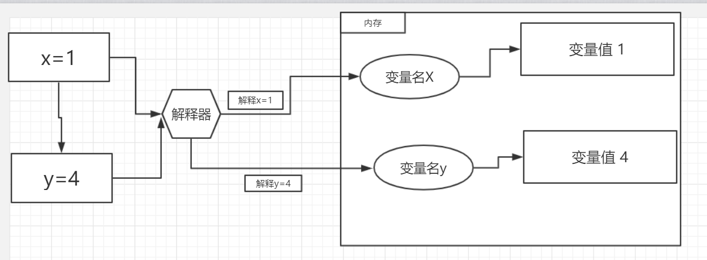
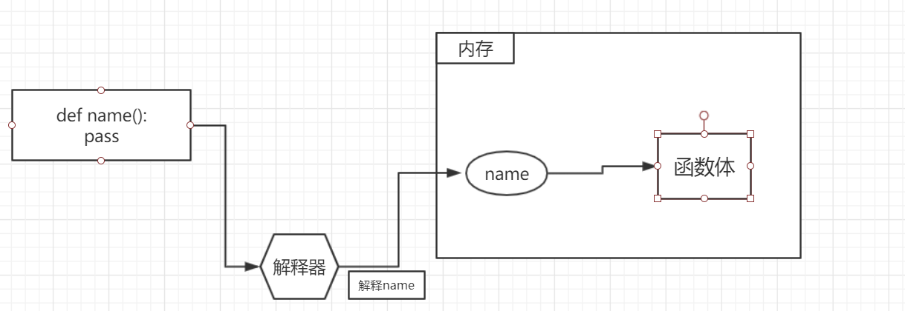

python 函数由关键字“def“定义
格式：
def 函数名(参数):
'''对函数的解释，编程规范'''
函数体函数的内存存储
先看一下变量在内存中的存储，函数和其差不多

当解释器读取到“x = 1”时就会在内存中开辟一部分空间，该空间的起始地址存放的是“变量名 x ”，后面存放的是 “x” 的具体内容。解释 y=4 也是同样的道理
对函数的解释也是这样的

解释器一定要在读取了 ‘def ...’ 这个语句后才会执行内存的分配，所以函数的调用应该放在被解释之后。
函数的调用
"()"是函数的调用符，"函数名()"，即表示调用一个函数
example：
def test_1():
print("hello ,test_1!")
test_1() #调用函数函数返回值
返回值由关键字"return"返回
1.如果函数没有定义返回值默认返回"None"
1 def test_1():
2 print("hello ,test_1!")
3 print(test_1()) #返回None2.如果函数有一个返回值，则返回该值
1 def test_1():
2 print("hello ,test_1!")
3 return 1
4 print(test_1()) #返回 13.如果函数有多个返回值，则返回一个元组
1 def test_1():
2 print("hello ,test_1!")
3 return 1,22,'dsada',2343
4 print(test_1()) #返回(1, 22, 'dsada', 2343)参数：有位置参数，关键字参数，默认参数，和参数组
位置参数：
传入的实参必须和形参一一对应，多一个或少一个都不行
example：
1 def test_2(arg1,arg2,arg3):
2 print('arg1=%s arg2=%s arg=%s' %(arg1,arg2,arg3))
3 test_2(5,2,0) #函数调用结果“arg1=5 arg2=2 arg=0”关键字参数：
关键字参数可以不按照顺序传入，但必须为每一个形参通过“key = value” 的方式传入实参
example：
1 def test_2(arg1,arg2,arg3):
2 print('arg1=%s arg2=%s arg=%s' %(arg3,arg1,arg2))
3 test_2(arg3=5,arg1=2,arg2=0) #执行结果 “arg1=5 arg2=2 arg=0”默认参数：
函数定义是可以设置默认参数，当一个形参没有实参传入时就会使用该默认参数，默认参数采用从右向左的设置方式 “param1，param2=6，param3=1”是可以的
但“param1，param2=6，param3”是不可以的因为，param3没有值二param2却有值
example：
1 def test_2(arg1=0,arg2=2,arg3=5):
2 print('arg1=%s arg2=%s arg=%s' %(arg3,arg2,arg1))
3 test_2() #执行结果 “arg1=5 arg2=2 arg=0”参数组：
当不知道有多少个参数要传入函数时，可以采用参数组的形式
example：
1 def test_3(*args,**kwargs): #*args接受数目不定的位置参数，**kwargs就收数目不定的关键字参数
2 print('*arg:',args) #打印一个元组
3 print('**kwargs:%s' % kwargs) #打印一个字典
4 test_3(1,1,1,'handsome',name='joker',age=18,face='handsome')PS:位置参数和关键字参数混用时，关键字参数要在在位置参数的后面
局部变量全局变量
全局变量：
定义在程序开头的变量
局部变量
定义在函数体里的变量，当函数被调用时才会在内存中为其开辟空间
当函数被调用时，函数可以通过一些操作改变全局变量的值，这个全局变量是：列表，字典，集合，类。而字符串，数字，元组是不可以被函数修改的。除非加上关键字global。这个方法不推荐使用。